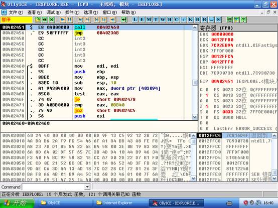
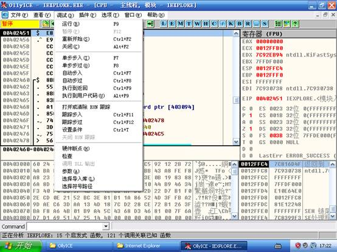
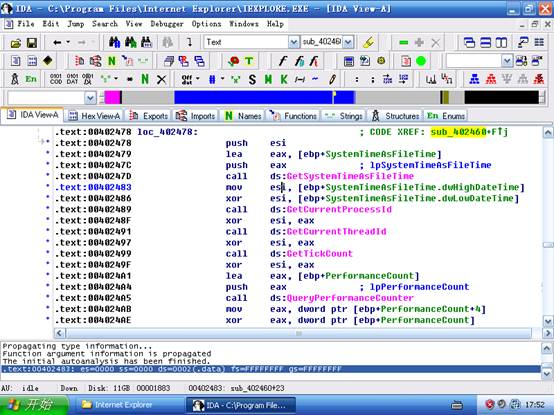
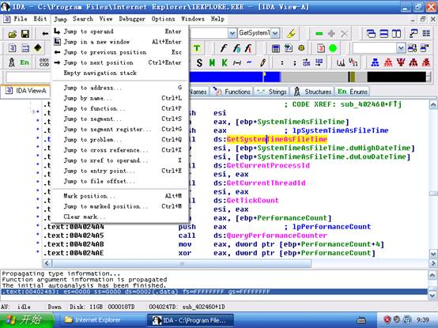
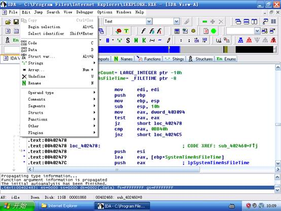

1、 复习汇编指令集，掌握基本汇编指令。
2、 学习PE格式，对PE格式有大致的了解。
3、 阅读逆向工程技术基础文档，掌握逆向工程技术相关原理
4、 了解静态反汇编和动态调试的区别。掌握Ollydbg，IDA Pro等工具的使用方法和各项功能。
1、 仔细阅读逆向工程基础文档。
2、 仔细认真观看逆向工程基础视频。
3、 根据视频内容，学习操作逆向调试工具实践。
4、 根据实验内容，回答实验问题。完成拓展训练，写出实验报告。
1、Ollydbg加载目标程序
Ollydbg，本文后续简称OD，提供了多种程序加载方式，满足不同的程序需求。这里介绍3种OD加载可执行程序的方式。如下图，是OD加载完毕目标程序后的界面截图：

（1） 第一种加载方法，直接打开目标可执行程序。
依次点击文件――打开――目标可执行文件，即可完成，也可以采用拖拽方式将目标可执行文件拖到OD领空。
（2） 第二种加载方式，带参数的加载目标可执行程序。
在加载完成目标程序时，点击调试――参数，填入参数，如果参数有多个，可用空格隔开。填完后，Ctrl+F2重新加载一起，即可完成带参数的加载。我们对一些程序进行调试的时候，可能需要目标程序带参数的运行起来才能满足要求。比如：浏览器在浏览某个网站的时候总是崩溃，但是单独打开浏览器时未发生，那么这个时候，带参数的调试就显得非常有用。
（3） 第三种加载方式，附加程序的方式。依次点击――文件――附件完成载入。在一些特殊的场合，我们需要用到附加程序的方式。比如程序已经运行，这个时候我们又需要对目标程序进行调试。或者一个程序运行时出错了，就会需要采用附加程序的方式。
2、Ollydbg调试实战
OD支持多种调试方式，功能强大。平常我们用到的最多的就是这些具体的动态调试跟踪方法了。如图我们大致看到OD提供的常用调试方法：

这里我们常用到的就是F7、F8、F9等普通的调试操作了。
（1） 随便载入一个程序，OD停在代码入口处。试着用F7单步调试代码，观察右边寄存器值的变化。观察寄存器EIP的变化。观察堆栈和ESP的变化。
（2） 尝试用F8调试程序，比较F7和F8的差别，尤其是在运行到有CALL指令的语句时候。总结他们的用法。
（3） 遇到CALL系统API的语句的时候，重点关注堆栈的内容和变化，按F7一次进入API函数内部后，再看看堆栈的显示。
（4） OD载入IE程序，试下F9的效果。
（5） 遇到CALL系统API的语句的时候观察当前执行指令的地址区间，用F7跟进系统程序后，观察当前执行指令的地址区间。比较差别。同时使用Alt+F9，看看执行后的效果。
（6） 试试在任何一个子函数的代码空间里使用Ctrl+F9，理解执行到返回的涵义。
（7） 体验Ctrl+G的作用，填入一个地址，回车。
（8） 观看录像视频，尝试给某个位置下断点，并体验断点的作用。
3、IDA
Pro静态反汇编分析
IDA Pro是个非常强大的反汇编工具，IDA与OD不同的特点在于，IDA更加擅长于静态的反汇编分析。如果对目标程序做详细分析，分析它的数据结构，代码设计思想等等，那么IDA是最好的选择。先对IDA的基本操作做介绍。

（1） 安装IDA程序，并载入一个目标程序，观察其界面，布局和大致情况。
（2） 根据录像提示，查看截图中的各个标签页。了解他们的功能和用途。

先查看IDA ViewA标签页，在IDA的菜单栏JUMP里面有一部分常用的操作，如上图所示。我们来分别学习这些功能。
（3） 鼠标双击任意一个子函数、API函数或者字串，或者单击再Enter，查看界面变化。再按ESC，体验IDA的功能。而后再按Ctrl+Enter，观察变化。
（4） 使用G命令，按字母G，填写地址，可到达相应地址显示内容。
（5） 体验Ctrl+L/P/S/G/Q/X/E等操作，结合PE结构的知识来理解。
（6） 鼠标单击一个变量或者函数等，按字母键X，观察效果。X命令可以列举出，所用引用过这个变量或者函数的位置。
（7） 鼠标单击任意一个函数或者变量名，点击鼠标右键查看功能，尝试使用N命令。或者点击一个立即数，单击右键变换其进制显示。

（8） 鼠标单击某块代码，尝试使用上图的命令U命令，按下键盘U，观察变化。再按下字母C查看变化。
（9） 鼠标单击某块数据，比如到DATA节去找。按下键盘U，再多次按下D，查看变化，体会IDA的作用。
（10） 观看录像，自我操作学习。
（1）用OD、IDA载入一个DLL动态链接库，比较与EXE分析时观察的有什么不同，并仔细查看代码入口和导入导出表。
逆向工程是信息安全技术中非常重要的技术，是一门基本功技术。Ollydbg和IDA Pro凭借它们极强的功能和友好的界面，成为了现在主流的调试器，当然还有一些著名的调试器，我们也会在后续的实验中介绍。通过逆向技术我们可以有能力探究更多的未知的东西，掌握调试技术我们可以轻易的从程序中找出问题，修复BUG。通过这一次试验，我们对逆向工程基础有一个深刻的了解，为进一步的深入学习打下基础。